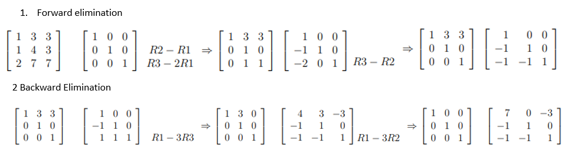

Topic 13 Determinant and Inversion of Matrices
We have introduced the Gaussian elimination method to solve the linear system of equations. This note focuses on the algorithm for finding the inverse of square matrices and then use the algorithm to solve matrix equations,
13.1 Concepts of Matrix: A Review
We first define some special matrices and then review the basic properties of matrices.
13.1.1 Definitions of Some Special Matrices
A general form of a \(n\times m\) matrix is given by
\[ A_{n\times m} = \left[\begin{array}{ccccc} a_{11} & a_{12} & \cdots & a_{1m} \\ a_{21} & a_{22} & \cdots & a_{2m} \\ \vdots & \vdots & \vdots & \vdots \\ a_{n-1,1} & a_{n-1.2} & \cdots & a_{n-1,m} \\ a_{n1} & a_{n2} & \cdots & a_{nm} \end{array} \right] \]
That \(n\) rows and \(m\) columns. If \(n = m\), the corresponding matrix is called the square matrix. If all off-diagonal elements of a square matrix are equal to zero, the square matrix is called diagonal matrix
\[ D_{n\times n} = \left[\begin{array}{ccccc} a_{11} & 0 & \cdots & 0 \\ 0 & a_{22} & \cdots & 0 \\ \vdots & \vdots & \ddots & \vdots \\ 0 & 0& \cdots & a_{nn} \end{array} \right] \] A very important special diagonal matrix with all diagonal elements being 1 is called identity matrix and has the following form
\[ I_{n\times n} = \left[\begin{array}{ccccc} 1 & 0 & \cdots & 0 \\ 0 & 1 & \cdots & 0 \\ \vdots & \vdots & \ddots & \vdots \\ 0 & 0& \cdots & 1 \end{array} \right] \]
The following square matrix is called a symmetric matrix
\[ A_{n\times n} = \left[\begin{array}{ccccc} a_{11} & a_{12} & \cdots & a_{1n} \\ a_{12} & a_{22} & \cdots & a_{2n} \\ \vdots & \vdots & \vdots & \vdots \\ a_{1,n-1} & a_{2,n-1} & \cdots & a_{n,n-1} \\ a_{1n} & a_{2n} & \cdots & a_{nn} \end{array} \right] \] A square matrix is called lower triangular if all the entries above the main diagonal are zero. Similarly, a square matrix is called upper triangular if all the entries below the main diagonal are zero. S and T represent lower and upper triangular matrices respectively.
\[ S_{n\times n} = \left[\begin{array}{ccccc} a_{11} & a_{12} & \cdots & a_{1n} \\ 0 & a_{22} & \cdots & a_{2n} \\ \vdots & \vdots & \vdots & \vdots \\ 0 & 0 & \cdots & a_{nn} \end{array} \right] ~ ~ \text{and} ~ ~ T_{n\times n} = \left[\begin{array}{ccccc} b_{11} & 0 & \cdots & 0 \\ b_{21} & b_{22} & \cdots & 0 \\ \vdots & \vdots & \vdots & 0 \\ b_{n1} & b_{n2} & \cdots & b_{nn} \end{array} \right] \]
13.1.2 Binary Operations
We perform matrix addition and subtraction, the two matrices must have the same dimensions.
Addition and Subtraction
Let
\[ A_{n\times m} = \left[\begin{array}{ccccc} a_{11} & a_{12} & \cdots & a_{1m} \\ a_{21} & a_{22} & \cdots & a_{2m} \\ \vdots & \vdots & \vdots & \vdots \\ a_{n-1,1} & a_{n-1.2} & \cdots & a_{n-1,m} \\ a_{n1} & a_{n2} & \cdots & a_{nm} \end{array} \right] ~ ~ \text{and} ~ ~ B_{n\times m} = \left[\begin{array}{ccccc} b_{11} & b_{12} & \cdots & b_{1m} \\ b_{21} & b_{22} & \cdots & b_{2m} \\ \vdots & \vdots & \vdots & \vdots \\ b_{n-1,1} & b_{n-1.2} & \cdots & b_{n-1,m} \\ b_{n1} & b_{n2} & \cdots & b_{nm} \end{array} \right] \]
\[
A_{n\times m}\pm B_{n\times m} = \left[\begin{array}{ccccc}
a_{11}\pm b_{11} & a_{12}\pm b_{12} & \cdots & a_{1m}\pm b_{1m} \\
a_{21}\pm b_{21} & a_{21}\pm b_{22} & \cdots & a_{21}\pm b_{2m} \\
\vdots & \vdots & \vdots & \vdots \\
a_{n-1,1}\pm b_{n-1,1} & a_{n-1,1}\pm b_{n-1.2} & \cdots & a_{n-1,1}\pm b_{n-1,m} \\
a_{n1}\pm b_{n1} & a_{n1}\pm b_{n2} & \cdots & a_{nm}\pm b_{nm}
\end{array}
\right]
\]
Multiplication
When multiplying two matrices, the two matrices must be compatible. That is the number of columns of the first (left) matrix MUST be equal to the number of rows in the second (right) matrix. To illustrate this compatibility, we define
\[ C_{p\times q} = \left[\begin{array}{ccccc} c_{11} & c_{12} & \cdots & c_{1q} \\ c_{21} & c_{22} & \cdots & c_{2q} \\ \vdots & \vdots & \vdots & \vdots \\ c_{p-1,1} & c_{p-1,2} & \cdots & c_{p-1,m} \\ c_{p1} & c_{p2} & \cdots & c_{pq} \end{array} \right] ~ ~ \text{and} ~ ~ D_{q\times k} = \left[\begin{array}{ccccc} d_{11} & d_{12} & \cdots & d_{1k} \\ d_{21} & d_{22} & \cdots & d_{2k} \\ \vdots & \vdots & \vdots & \vdots \\ d_{q-1,1} & d_{q-1.2} & \cdots & d_{q-1kk} \\ d_{q1} & d_{q2} & \cdots & d_{qk} \end{array} \right] \]
The product of the above two matrices is defined to be
\[ M_{p\times k} = \left[\begin{array}{ccccc} c_{11}\times d_{11} + c_{12}\times d_{21} + \cdots + c_{1q}\times d_{q1} & \cdots & c_{11}\times d_{1k} + c_{12}\times d_{2k} + \cdots + c_{1q}\times d_{qk} \\ c_{21}\times d_{11} + c_{22}\times d_{21} + \cdots + c_{2q}\times d_{q1} & \cdots & c_{21}\times d_{1k} + c_{22}\times d_{2k} + \cdots + c_{2q}\times d_{qk} \\ \vdots & \vdots & \vdots \\ c_{p-1,1}\times d_{11} + c_{p-1,2}\times d_{21} + \cdots + c_{p-1,q}\times d_{q1} & \cdots & c_{p-1,1}\times d_{1k} + c_{p-1,2}\times d_{2k} + \cdots + c_{p-1,q}\times d_{qk} \\ c_{p1}\times d_{11} + c_{p2}\times d_{21} + \cdots + c_{pq}\times d_{q1} & \cdots & c_{p1}\times d_{1k} + c_{p2}\times d_{2k} + \cdots + c_{pq}\times d_{qk} \end{array} \right] \]
In general, multiplication is NOT commutative. That is, \(A\times B \ne B\times A\).
Example 1: Define \[ C_{3\times 4} = \left[\begin{array}{ccccc} 1& 2 & 3 & 4 \\ 4 & 3 & 2 & 1 \\ 1 & 3 & 5 & 2 \end{array} \right] ~ ~ \text{and} ~ ~ D_{4\times 3} = \left[\begin{array}{ccccc} 2 & 1 & 4 \\ 3 & 2 & 2 \\ 0 & 1 & 3 \\ 1 & 2 & 5 \end{array} \right] \] Then \[ C_{3\times 4} \times D_{4\times 3} = \left[\begin{array}{ccccc} 1& 2 & 3 & 4 \\ 4 & 3 & 2 & 1 \\ 1 & 3 & 5 & 2 \end{array} \right] \times \left[\begin{array}{ccccc} 2 & 1 & 4 \\ 3 & 2 & 2 \\ 0 & 1 & 3 \\ 1 & 2 & 5 \end{array} \right] ~ = ~ \left[\begin{array}{ccccc} 12 & 16 & 37 \\ 18 & 14 & 33 \\ 13 & 16 & 35 \\ \end{array} \right]. \] However,
\[ D_{4\times 3} \times C_{3\times 4} = \left[\begin{array}{ccccc} 2 & 1 & 4 \\ 3 & 2 & 2 \\ 0 & 1 & 3 \\ 1 & 2 & 5 \end{array} \right] \times \left[\begin{array}{ccccc} 1& 2 & 3 & 4 \\ 4 & 3 & 2 & 1 \\ 1 & 3 & 5 & 2 \end{array} \right] ~ = ~ \left[\begin{array}{ccccc} 10 & 19 & 28 & 17 \\ 13 & 18 & 23 & 18\\ 7 & 12 & 17 & 7\\ 14 & 23 & 32 & 16 \end{array} \right]. \]
Division is not defined in matrix algebra. For example, Even with two square matrices \(P_{nn}\) and \(Q_{nn}\), \(P \div Q\) is NOT defined! The concept of the inverse of a square matrix is analogous to the concept of the reciprocal of a number. The detail of the inverse matrix will be discussed in the subsequent sections.
13.1.3 Unary Operations
Addition, subtraction, and multiplication involve two matrices. Next look at some unary operations in matrix algebra.
Transpose. The matrix that is resulting from a given matrix B after changing or reversing its rows to columns and columns to rows is called the transpose of a matrix B. For example,
\[ D_{3\times 4} = \left[\begin{array}{ccccc} 1& 2 & 3 & 4 \\ 4 & 3 & 2 & 1 \\ 1 & 3 & 5 & 2 \end{array} \right] ~ ~ \text{and} ~ ~ D^T_{4\times 3} = \left[\begin{array}{ccccc} 1 & 4 & 1 \\ 2 & 3 & 3 \\ 3 & 2 & 5 \\ 4 & 1 & 2 \end{array} \right] \]
Note that transpose is defined for any matrices (square or non-square) matrices.
Trace of A Matrix: The trace is the sum of all diagonal elements of a square matrix.
\[ A_{n\times n} = \left[\begin{array}{ccccc} a_{11} & a_{12} & \cdots & a_{1n} \\ a_{21} & a_{22} & \cdots & a_{2n} \\ \vdots & \vdots & \vdots & \vdots \\ a_{n-1,1} & a_{n-1.2} & \cdots & a_{n-1,n} \\ a_{n1} & a_{n2} & \cdots & a_{nn} \end{array} \right], ~ ~ \text{then} ~ ~ \text{Trace}(A_{n\times n}) = \sum_{i=1}^n a_{ii} \]
13.2 Determinant of a Square Matrix
The determinant of a matrix is the scalar value or number calculated using a square matrix. The calculation of a general square matrix is not straightforward, an iterative algorithm is needed. We will not introduce these algorithms in this class. But for triangular matrices, we can use the mathematical induction method to show the following theorem
Theorem: Let \(T_n\) be an upper triangular matrix of order \(n\).
\[ T_{n} = \left[\begin{array}{ccccc} a_{11} & a_{12} & \cdots & a_{1n} \\ 0 & a_{22} & \cdots & a_{2n} \\ \vdots & \vdots & \vdots & \vdots \\ 0 & 0 & \cdots & a_{nn} \end{array} \right] \]
Let \(\text{det}(T_n)\) be the determinant of \(T_n\). Then \(\text{det}(T_n)\) is equal to the product of all the diagonal elements of \(T_n\). That is
\[ \text{det}(T_n)=\sum_{i=1}^n a_{ii}. \]
Sketch of Proof: We use mathematical induction to prove this theorem.
The determinant is \(a_{11}\), which is clearly also the diagonal element. That is, \(\text{det}(T_1) = a_{11}\). This establishes the induction basis.
Assume that \(\text{det}(T_k) = \sum_{i=1}^k a_{ii}\) for \[ T_{k} = \left[\begin{array}{ccccc} a_{11} & a_{12} & \cdots & a_{1k} \\ 0 & a_{22} & \cdots & a_{2k} \\ \vdots & \vdots & \vdots & \vdots \\ 0 & 0 & \cdots & a_{kk} \end{array} \right]. \]
We now consider
\[ T_{k+1} = \left[\begin{array}{ccccc} a_{11} & a_{12} & \cdots & a_{1k} & a_{1,k+1} \\ 0 & a_{22} & \cdots & a_{2k} & a_{2,k+1} \\ \vdots & \vdots & \vdots & \vdots & \vdots \\ 0 & 0 & \cdots & a_{kk} & a_{k,k+1} \\ 0 & 0 & \cdots & 0 & a_{k+1,k+1} \end{array} \right]. \]
Expanding above matrix by the \((k+1)\)-th row, we have
\[ T_{k+1} = \left[\begin{array}{ccccc} a_{11} & a_{12} & \cdots & a_{1k} & a_{1,k+1} \\ 0 & a_{22} & \cdots & a_{2k} & a_{2,k+1} \\ \vdots & \vdots & \vdots & \vdots & \vdots \\ 0 & 0 & \cdots & a_{nk} & a_{k,k+1} \\ 0 & 0 & \cdots & 0 & a_{k+1,k+1} \end{array} \right] ~ = ~ a_{k+1, k+1}\times \left[\begin{array}{ccccc} a_{11} & a_{12} & \cdots & a_{1k} \\ 0 & a_{22} & \cdots & a_{2k} \\ \vdots & \vdots & \vdots & \vdots \\ 0 & 0 & \cdots & a_{kk} \end{array} \right]. \]
Therefore, \[ \text{det}(T_{k+1}) = \text{det}(a_{k+1,k+1}T_k) = a_{k+1, k+1} \text{det}(T_k) = a_{k+1, k+1}\sum_{i=1}^k a_{ii} = \sum_{i=1}^{k+1} a_{ii}. \]
This completes the proof.
We have introduced the Gaussian elimination algorithm that can be used for the triangulation of a square matrix. Therefore, we can use the R function we developed earlier to find the determinant of square matrices.
DET = function(A){
# Input A: Must be a square matrix
A0 = A
n = dim(A0)[1] # number of rows
for(i in 1:(n-1)){ # iterator fo pivot element A0[i,i]
# i = 1, 2, ..., n-1
#~~~~~~~~~~~~~~~~~~~~~ Make the function robust ~~~~~~~~~~~~~~~~~~~~~~~~~#
if(A0[i,i] == 0){
non.0 = which(A0[,i] != 0)
#cat("\n\n i =",i, ", non.0 =", non.0,". (i+1):n =", (i+1):n, ".")
id = intersect(non.0, (i+1):n)[1] # which() equiv to find() in MATLAB
if(!is.na(id)){
tempi = A0[i,] # put the i-th row in a place-holder
A0[i,] = A0[id,] # row swapping
A0[id,] = tempi
}
}
#~~~~~~~~~~~~~~~~~~~~~~~~~~~~~~~~~~~~~~~~~~~~~~~~~~~~~~~~~~~~~~~~~~~~~~~~#
if(A0[i,i] != 0){ # A0[i,i] is in the denominator of recursive equation
for(j in (i+1):n){ # to make the augmented matrix in the row echelon form
#cat("\n\n j =",j,".")
A0[j,] = A0[j,] - (A0[j,i]/A0[i,i])*A0[i,]
}
}
}
DET = prod(diag(A0)) # prod() - vectorized multiplication, diag() extracts a[i,i]
if(dim(A)[1] != dim(A)[2]) {
cat("\n\nNeed a square matrix!")
} else{
list(Triangular.Metrix = round(A0,4), Determinant = round(DET,4))
}
}Example 3. Let
\[ A = \left[\begin{array}{cccc} 1 & 9 & 8 & 7 \\ 3 & 8 & 3 & 8\\ 7 & 2 & 7 & 7\\ 4 & 3 & 2 & 6 \end{array} \right]. \]
The determinant of A can be calculated using R in the following
## $Triangular.Metrix
## [,1] [,2] [,3] [,4]
## [1,] 1 9 8.0000 7.0000
## [2,] 0 -19 -21.0000 -13.0000
## [3,] 0 0 18.4211 -0.2632
## [4,] 0 0 0.0000 0.6714
##
## $Determinant
## [1] -235The determinant \(det(A) = -235\).
Example 4: Let \[ C_{3\times 4} = \left[\begin{array}{cccc} 1& 2 & 3 & 4 \\ 4 & 3 & 2 & 1 \\ 1 & 3 & 5 & 2 \end{array} \right] \]
##
##
## Need a square matrix!
13.3 Matrix Inversion
Inverse of a square matrix Let \(A\) be a square matrix of order \(n \times n\) and let \(I_n\) be an identity matrix of same order. If there exists a square matrix \(B\), such that \(AB = BA = I\), then the matrix \(A\) is said to be invertible. The matrix \(B\) is called inverse of \(A\), that is denoted by \(A^{-1}\).
We can use the Gauss-Jordan algorithm to find the inverse of a square matrix if the inverse exists.
Example 5 Find the inverse of the following matrix \[ A = \left[\begin{array}{cccc} 1 & 3 & 3 \\ 1 & 4 & 3 \\ 2 & 7 & 7 \\ \end{array} \right]. \] Solution: We perform the forward and backward eliminations in the following

Therefore, \[ A^{-1} = \left[\begin{array}{cccc} 7 & 0 & -3 \\ -1 & 1 & 0 \\ -1 & -1 & 1 \\ \end{array} \right]. \]
The algorithm is based on the extended augmented matrix. The following is an outline of the algorithm.
Let the following square matrix be invertible.
\[ A_{n\times n} = \left[\begin{array}{cccc} a_{11} & a_{12} & \cdots & a_{1n} \\ a_{12} & a_{22} & \cdots & a_{2n} \\ \vdots & \vdots & \ddots & \vdots \\ a_{1n} & a_{2n} & \cdots & a_{nn} \end{array} \right] \]
The extended augmented matrix is \[ AM_{n,2n} = \left[\begin{array}{cccccccccc} a_{11} & a_{12} & \cdots & a_{1n} & \text{|} & 1 & 0 & \cdots & 0 \\ a_{21} & a_{22} & \cdots & a_{2n} & \text{|} & 0 & 1 & \cdots & 0 \\ \vdots & \vdots & \ddots & \vdots & \text{|} & \vdots & \vdots & \ddots & 0 \\ a_{n1} & a_{n2} & \cdots & a_{nn} & \text{|} & 0 & 0 & \cdots & 1 \end{array} \right]_{n\times 2n}. \]
We can use Gauss-Jordan row operations to turn the above extended augmented matrix into the following form
\[ IM_{n,2n} = \left[\begin{array}{ccccccccc} 1 & 0 & \cdots & 0& \text{|} & w_{11} & w_{12} & \cdots & w_{1n} \\ 0 & 1 & \cdots & 0 & \text{|} & w_{21} & w_{22} & \cdots & w_{2n} \\ \vdots & \vdots & \ddots & \vdots & \text{|} & \vdots & \vdots & \ddots & 0 \\ 0 & 0 & \cdots & 1 & \text{|} & w_{n1} & w_{n2} & \cdots & w_{nn} \end{array} \right]_{n\times 2n}. \]
Then the inverse of A is given by
\[ A^{-1} = \left[\begin{array}{ccccc} w_{11} & w_{12} & \cdots & w_{1n} \\ w_{21} & w_{22} & \cdots & w_{2n} \\ \vdots & \vdots & \ddots & 0 \\ w_{n1} & w_{n2} & \cdots & w_{nn} \end{array} \right]_{n\times 2n}. \]
We can modify the Gauss.Jordan() in the previous note to get the following function to calculate the inverse matrix.
M.inv = function(A){
# Input A: Must be a square matrix
n = dim(A)[1] # number of rows
A0 = cbind(A, diag(rep(1,n)))
##
for(i in 1:(n-1)){ # iterator fo pivot element A0[i,i], i < n.
#~~~~~~~~~~~~~~~~~~~~~ Make the function robust ~~~~~~~~~~~~~~~~~~~~~~~~~#
if(A0[i,i] == 0){
non.0 = which(A0[,i] != 0)
#cat("\n\n i =",i, ", non.0 =", non.0,". (i+1):n =", (i+1):n, ".")
id = intersect(non.0, (i+1):n)[1] # which() equiv to find() in MATLAB
if(!is.na(id)){
tempi = A0[i,] # put the i-th row in a place-holder
A0[i,] = A0[id,] # row swapping
A0[id,] = tempi
}
}
#~~~~~~~~~~~~~~~~~~~~~~~~~~~~~~~~~~~~~~~~~~~~~~~~~~~~~~~~~~~~~~~~~~~~~~~~#
if(A0[i,i] != 0){ # A0[i,i] is in the denominator of recursive equation
for(j in (i+1):n){ # to make the augmented matrix in the row echelon form
#cat("\n\n j =",j,".")
A0[j,] = A0[j,] - (A0[j,i]/A0[i,i])*A0[i,]
}
}
}
A1=A0
n = length(A1[,1])
id.0 = rep(1,n) # indicator of zero A[i,i]
for (i in 1:n){
if(A1[i,i] == 0) id.0[i] = 0
}
if(sum(id.0) == n){ # A[i,i] != 0
for (i in 1:n){
A1[i,] = A1[i,] /A1[i,i] # Divide each row by A1[i,i]
} # so that new A1[i,i] = 1.
k = n
A2 = A1[k:1, c(k:1,(n+1):(2*n))] # re-arrange rows and columns
#_______________________________________________________________##
for(i in 1:(n-1)){
if(A2[i,i] != 0){ # A0[i,i] is in the denominator of recursive equation
for(j in (i+1):n){ # to make the augmented matrix in the row echelon form
A2[j,] = A2[j,] - (A2[j,i]/A2[i,i])*A2[i,]
}
}
}
#--------------------------------------------------------------##
A4 = A2[k:1, c(k:1,(n+1):(2*n))] # backward re-arrangement
round(A4[, (n+1):(2*n)],7)
} else if(dim(A)[1] != dim(A)[2]){
cat("\n\nA square matrix is needed!")
}else {# if exists A[i,i] =0
cat("The matrix is singular")
}
}Example 6 (continuation of example 3) Let
\[ A = \left[\begin{array}{cccc} 1 & 9 & 8 & 7 \\ 3 & 8 & 3 & 8\\ 7 & 2 & 7 & 7\\ 4 & 3 & 2 & 6 \end{array} \right]. \]
The determinant of \(A\) can be calculated using R in the following
## [,1] [,2] [,3] [,4]
## [1,] -0.4893617 0.8723404 0.5319149 -1.2127660
## [2,] -0.2978723 0.7744681 0.3063830 -1.0425532
## [3,] 0.1489362 -0.1872340 0.0468085 0.0212766
## [4,] 0.4255319 -0.9063830 -0.5234043 1.4893617## [,1] [,2] [,3] [,4]
## [1,] -0.4893617 0.8723404 0.53191489 -1.2127660
## [2,] -0.2978723 0.7744681 0.30638298 -1.0425532
## [3,] 0.1489362 -0.1872340 0.04680851 0.0212766
## [4,] 0.4255319 -0.9063830 -0.52340426 1.4893617Example 7 (continuation of example 4)
##
##
## A square matrix is needed!Example 8 (continuation of example 5) Find the inverse of the following matrix \[ A = \left[\begin{array}{cccc} 1 & 3 & 3 \\ 1 & 4 & 3 \\ 2 & 7 & 7 \\ \end{array} \right]. \]
## [,1] [,2] [,3]
## [1,] 7 0 -3
## [2,] -1 1 0
## [3,] -1 -1 1